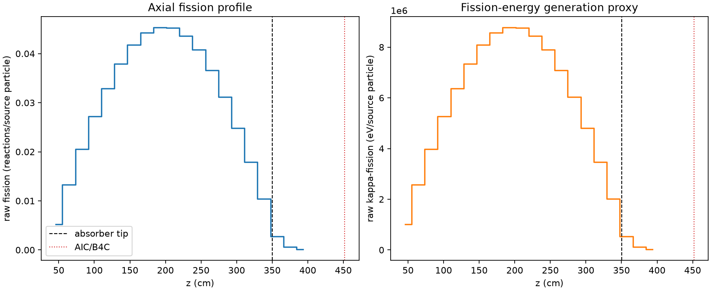
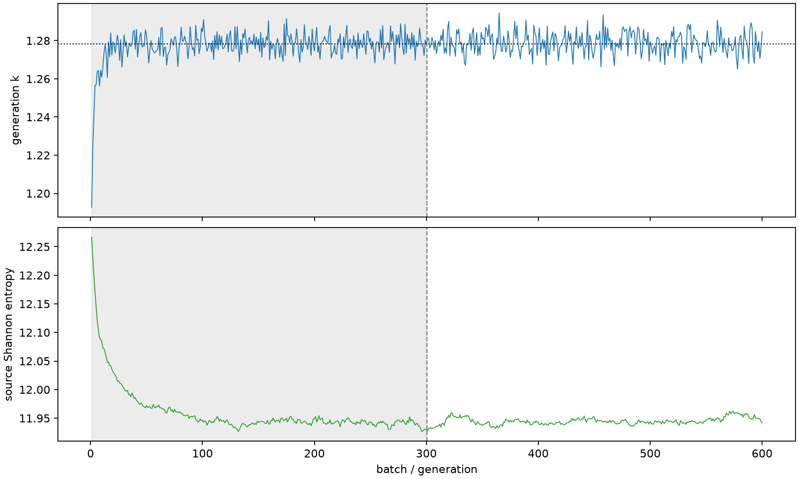

| field | value |
|---|---|
| experiment | V2-STAGE_256_OGRENCI_04-0007 |
| k | 1.278385020449846 |
| MC standard error | 0.00019192546425005923 |
| seconds | 1008.0340991810008 |
| acceptance | not_assessed |
| convergence | review_required |
Completed is output integrity only; physical and statistical review required. Zero tallies do not prove zero production or zero uncertainty.
| diagnostic | value |
|---|---|
| geometric fuel voxels | 5280 |
| zero fission tally voxels | 0 |
| low signal fuel voxels | 4 |
| low signal fission share | 3.80561847218718e-06 |
| low signal kappa share | 3.8066131079868937e-06 |
| important fission share | 0.9500542901985823 |
| previous filter included | 5276 |
| duration estimate s | 1562.5173488400023 |
| actual minus estimate s | -554.4832496590016 |
| fission relative MC error | statistics |
|---|---|
| all_geometric_fuel | {"voxels": 5280, "positive_mean_voxels": 5280, "zero_mean_voxels": 0, "undefined_relative_error_voxels": 0, "median": 0.010514398591834222, "p95": 0.09150065396509076, "maximum": 0.22683954469685955} |
| low_signal | {"voxels": 4, "positive_mean_voxels": 4, "zero_mean_voxels": 0, "undefined_relative_error_voxels": 0, "median": 0.21025588037070703, "p95": 0.22497350872866617, "maximum": 0.22683954469685955} |
| important_95pct | {"voxels": 3818, "positive_mean_voxels": 3818, "zero_mean_voxels": 0, "undefined_relative_error_voxels": 0, "median": 0.009425248650688587, "p95": 0.013903078446884251, "maximum": 0.0172101077493759} |
| outside_previous_filter | {"voxels": 4, "positive_mean_voxels": 4, "zero_mean_voxels": 0, "undefined_relative_error_voxels": 0, "median": 0.21025588037070703, "p95": 0.22497350872866617, "maximum": 0.22683954469685955} |
| kappa_fission relative MC error | statistics |
|---|---|
| all_geometric_fuel | {"voxels": 5280, "positive_mean_voxels": 5280, "zero_mean_voxels": 0, "undefined_relative_error_voxels": 0, "median": 0.010503105063468203, "p95": 0.09135909808729174, "maximum": 0.22656600790086978} |
| low_signal | {"voxels": 4, "positive_mean_voxels": 4, "zero_mean_voxels": 0, "undefined_relative_error_voxels": 0, "median": 0.20996092166686325, "p95": 0.22469373149560176, "maximum": 0.22656600790086978} |
| important_95pct | {"voxels": 3818, "positive_mean_voxels": 3818, "zero_mean_voxels": 0, "undefined_relative_error_voxels": 0, "median": 0.00941490537572617, "p95": 0.01388896317318324, "maximum": 0.017191753487783415} |
| outside_previous_filter | {"voxels": 4, "positive_mean_voxels": 4, "zero_mean_voxels": 0, "undefined_relative_error_voxels": 0, "median": 0.20996092166686325, "p95": 0.22469373149560176, "maximum": 0.22656600790086978} |
| axial bin | fission share | kappa-fission share |
|---|---|---|
| 1 | 0.010028152386218018 | 0.010028571020575526 |
| 2 | 0.025458697573145714 | 0.025458588377259214 |
| 3 | 0.03931706132816918 | 0.03931705303181625 |
| 4 | 0.05211780013656778 | 0.05211762089905723 |
| 5 | 0.0628988641468142 | 0.06289853341588914 |
| 6 | 0.07262016696240306 | 0.07261995648725884 |
| 7 | 0.07994933725157403 | 0.0799492579899658 |
| 8 | 0.08471887394138838 | 0.08471859263776758 |
| 9 | 0.08669116260822664 | 0.08669098786555912 |
| 10 | 0.0865890377498708 | 0.08658875860806618 |
| 11 | 0.08352651300564393 | 0.08352636844402606 |
| 12 | 0.0780247019902512 | 0.07802464692814276 |
| 13 | 0.07002654309504379 | 0.07002649287566987 |
| 14 | 0.059630856451627544 | 0.05963070644545689 |
| 15 | 0.04757500306734374 | 0.047574942535927034 |
| 16 | 0.034223014920715056 | 0.03422302019980477 |
| 17 | 0.019888081215193643 | 0.0198880839593392 |
| 18 | 0.005324836939374716 | 0.0053260566697581075 |
| 19 | 0.001156398830888543 | 0.0011567691376331267 |
| 20 | 0.00023489639953987895 | 0.00023499247102747088 |
Histories include the inactive-to-active transition at batch 300. kappa-fission approximates fission energy production, not total heat deposition.

